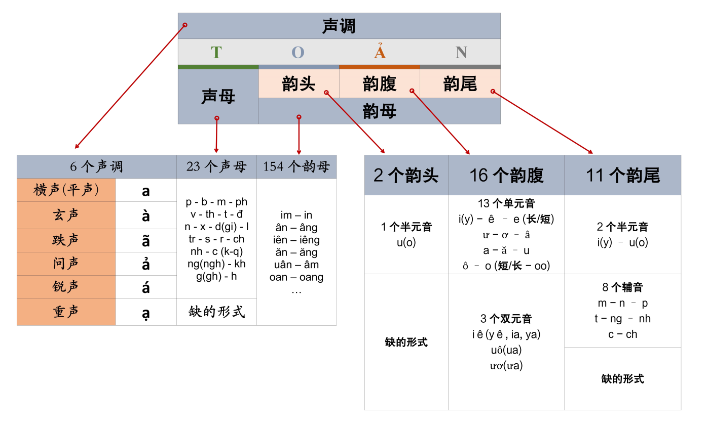
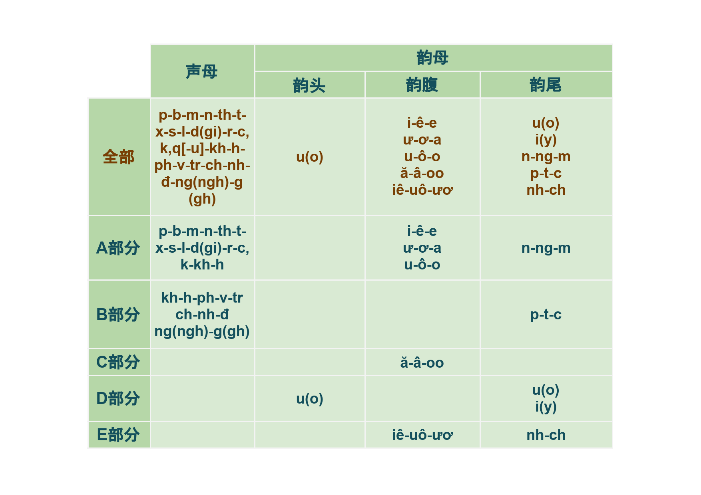

Skip navigation
阮玉煌 —— 越南语 - 练习发音资料 [Weixin: XiDeYueNanYu]
Home
1. 越南语发音概况
2. 声调介绍
3. 越南语9个基础单元音
4.（易读辅音）声母+基础单元音韵母(韵腹)（A）
5.（易读辅音）声母+基础单元音韵母(韵腹)（B）
6. 有关韵母声调练习（C）
7.（易读辅音）声母+基础单元音韵腹+韵尾-n （A）
8.（易读辅音）声母+基础单元音韵腹+韵尾-n （B）
9. 有关韵母声调练习（C）
10.（易读辅音）声母+基础单元音韵腹+韵尾-ng （A）
11.（易读辅音）声母+基础单元音韵腹+韵尾-ng （B）
12. 有关韵母声调练习（C）
13.（易读辅音）声母+基础单元音韵腹+韵尾-m （A）
14.（易读辅音）声母+基础单元音韵腹+韵尾-m （B）
15. 有关韵母声调练习（C）
«
Previous
|
Next
»
1. 越南语发音概况

学习内容

«
Previous
|
Next
»
Made with eXeLearning
(New Window)